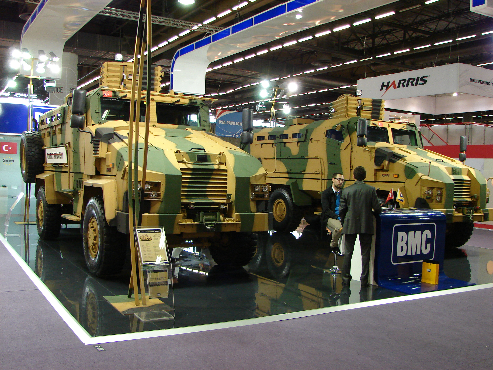
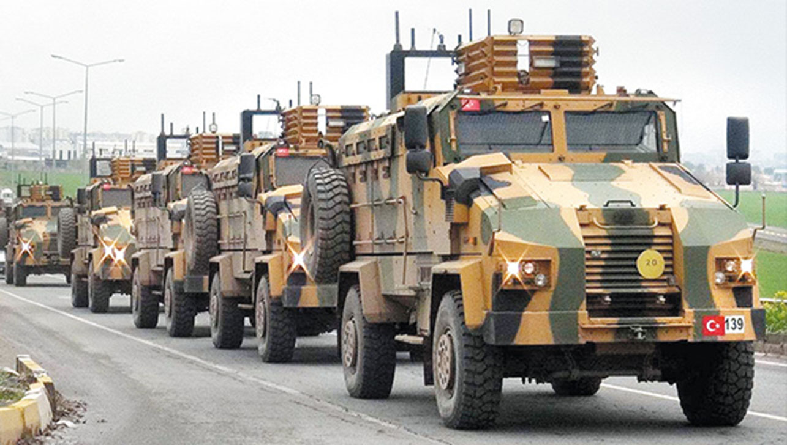
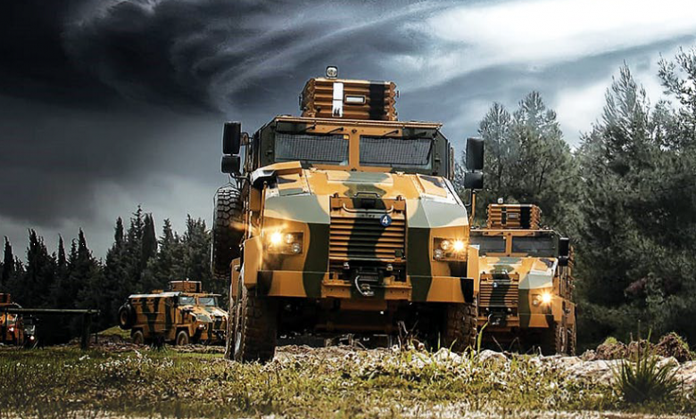

❮
❯
KİRPİ, BMC tarafından geliştirilen mayına dayanıklı, çok maksatlı zırhlı araç ailesidir. Araç; personel güvenliğini ön plana alan yapısı, V-shape monokok gövdesi ve yüksek koruma seviyesi ile özellikle riskli operasyon bölgeleri için geliştirilmiştir.
BMC’nin ürün sayfasında KİRPİ 4x4; özel zırhlı camlar, yangın söndürme sistemi, mürettebat bölmesi, klima sistemi, CTIS, duman havanı lançerleri ve kendini kurtarma vinci gibi sistemlerle sınıfında öne çıkan bir araç olarak tanıtılmaktadır.
KİRPİ ailesi; 4x4 temel sürüm, ambulans, KİRPİ II ve 6x6 gibi farklı görev ve taşıma ihtiyaçlarına yönelik varyantlarla genişletilmiştir.


